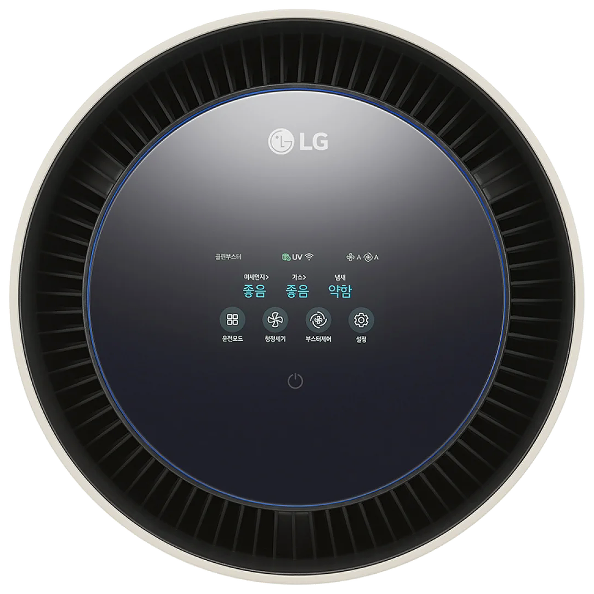
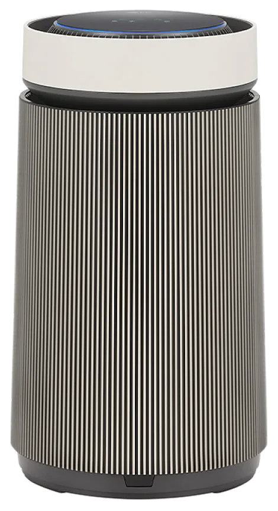
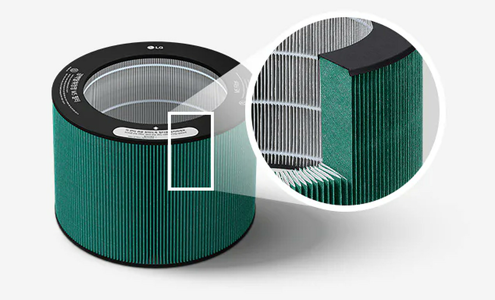
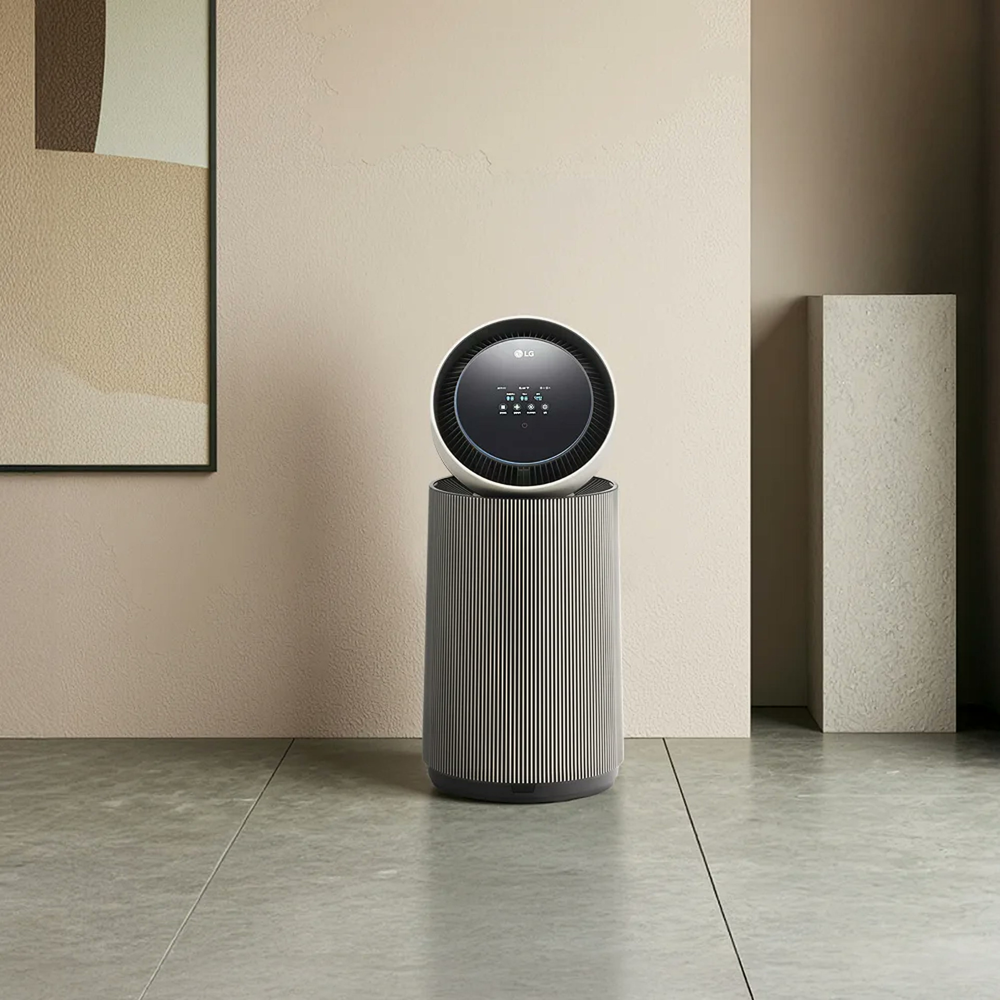
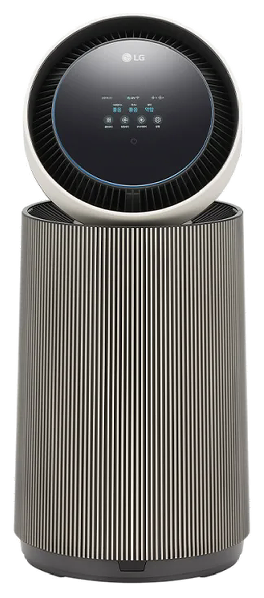

LG 퓨리케어 공기청정기
감지.
공기가 달라졌다면
구분.
무엇이 달라졌는지 나눠서 보여 줘요.
- PM1.0
- PM2.5
- PM10
- 유증기
- 냄새
- TVOC
- 포름알데히드
- 암모니아
8종 감지 항목은 필터가 제거하는 물질 목록과 다릅니다.

제품 화면과 LG ThinQ
확인.
어떤 항목인지 확인해 보세요.
- M5 강력탈취청정 필터
- 8가지 감지 항목
- 4.3인치 터치 LCD
- 612mm 본체 높이
LG ThinQ 앱은 Wi-Fi 연결이 필요해요. 본체 크기 가로 347 × 높이 612 × 깊이 347mm

강력탈취청정 M5 필터
유해 가스와 냄새를
M5 필터가 관리해요.
MOF 소재를 쓴 필터예요.
AS206N 계열의 CA 인증은 암모니아, 톨루엔, 포름알데히드의 유해가스 정화 성능을 평가합니다.

1단형 원통 본체
612mm 높이
본체 크기 가로 347 × 높이 612 × 깊이 347mm
본체 치수와 설치 이격거리를 구분해 확인합니다.

66㎡ 사용면적, 높이 612mm의 1단형 본체를 확인해 보세요.
66㎡는 판매 사양이며 집 구조와 사용 환경에 따른 실제 효과를 보장하지 않습니다.
LG 퓨리케어 공기청정기
감지. 구분. 확인.
AI 오브제컬렉션 360˚ 공기청정기 M5
AS206NSHA
